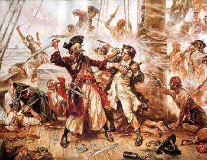

Способы ведения боя
Почти во все времена главным способом ведения боя был абордаж.Происходило это так – атакующий корабль вплотную сближался с «жертвой»,
после чего корабли сцеплялись специальными абордажными баграми, кошками и дреками,
чтобы корабли не разошлись во время боя. Далее пираты высаживались на палубу корабля
противника с помощью мостков и захватывали корабль с
применением холодного и огнестрельного оружия. Такой способ нападения позволял минимизировать повреждения обоих кораблей
и ценного груза, который находился в трюме жертвы. Поверженный корабль при этом могли, как отвести в порт, так
и затопить после грабежа, если
он был серьезно поврежден. абордаж Сами атаки не были бездумными, над палубой корабля натягивали прочную верёвочную
сеть для защиты от падающих обломков, на марсах матч размещались стрелки, чтобы сверху, с более удобной позиции
вести огонь по неприятелю. Также пираты продумывали и защиту своего корабля, к примеру, для защиты квартердека и полуюта,
где находились средства управления судном, между бортами воздвигали баррикады
из брёвен и бочек, наполненных железным ломом. 
Веселый роджер
Конечно, одним из главных символов пиратов является флаг с черепом человека и костями – Веселый Роджер. Единого пиратского фага не существовало – вариантов этого флага было достаточно много. На некоторых изображались черепа с костями, на других череп и песочные часы (намек, что время утекает), на третьих рука с саблей и т.д. Веселый РоджерВеселый РоджерВеселый Роджер Пираты никогда не плавали под пиратскими флагами, напротив, они старались использовать флаги разных стран в своих целях – поднимали флаги тех стран, которым симпатизировали или наличие которых было уместно в данной ситуации. Например, при атаке испанцев, пираты могли поднять английский флаг, так как Испания и Англия находились в состоянии войны. Или напротив можно было использовать «удобный» флаг, чтобы быстро уйти от более сильного врага. Что касается «Веселого Роджера», то его иногда поднимали уже в момент атаки на корабль – для устрашения.